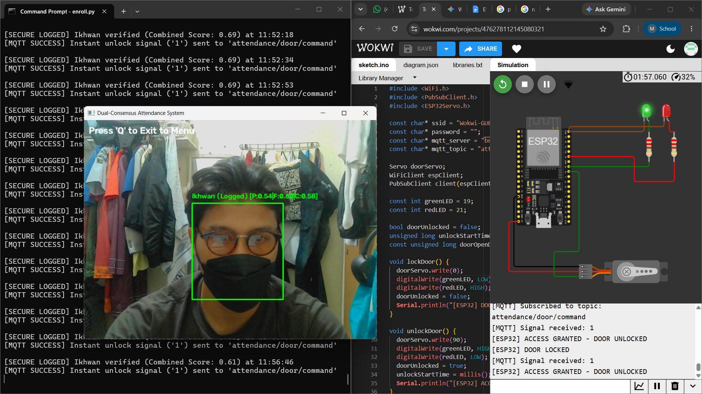
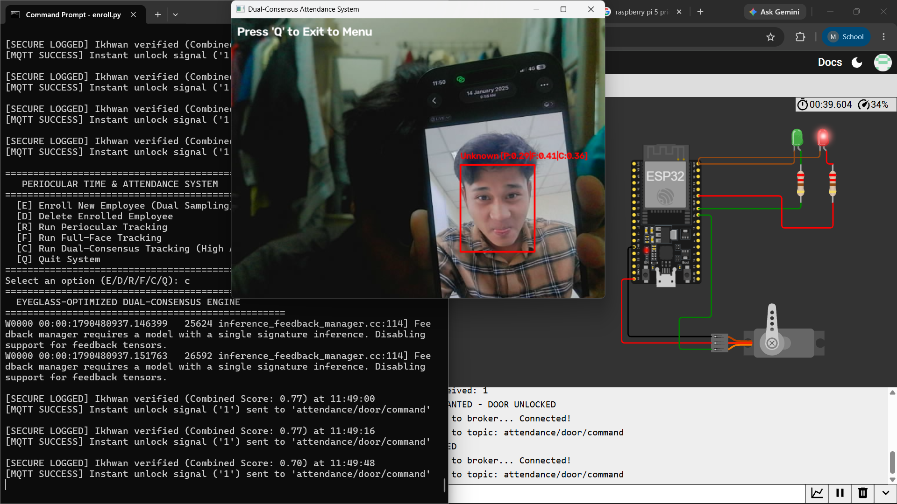
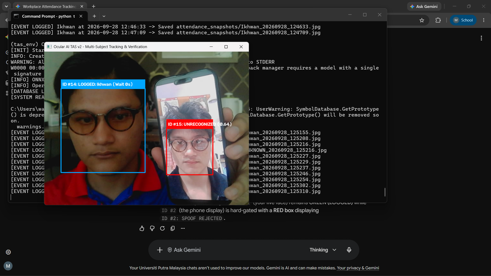
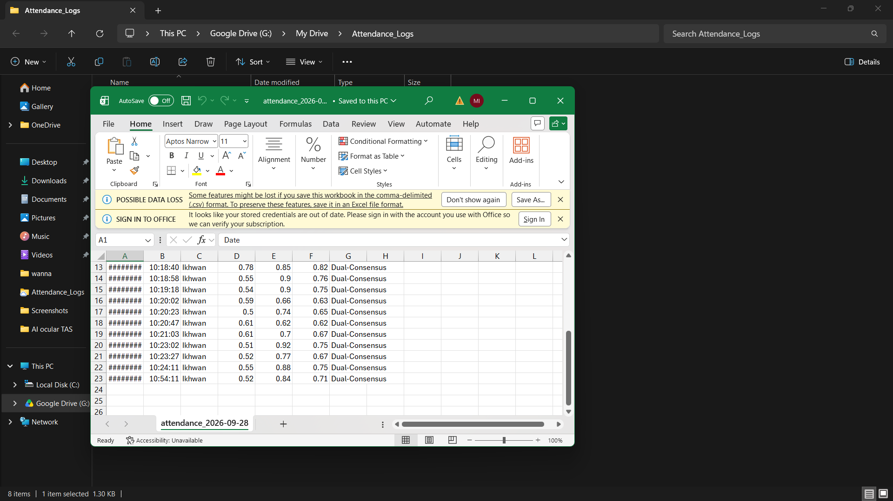

Ocular AI Time & Attendance System (Ocular AI TAS)
An industrial-grade computer vision and edge IoT ecosystem designed to eliminate workplace entry bottlenecks and lower-face occlusion failures (masks, niqabs, prescription glasses). Built with software-based 2D FFT presentation attack detection (PAD), multi-subject Euclidean centroid tracking, dynamic periocular score fusion, HiveMQ MQTT telemetry, and real-time cloud database logging.
1. Live System Verification & Hardware Testbench
Real-time execution of the Python inference engine integrated with physical/simulated ESP32 hardware via MQTT messaging.

Mask & Eyeglass Verification (Access Granted)
MQTT Unlock
System identifies subject under combined mask and eyeglass occlusion (P:0.54 | F:0.60 | C:0.58). Dispatches instant MQTT signal ('1') to topic attendance/door/command, rotating ESP32 servo motor to 90° and turning Green LED ON.

Spoof & Unknown Attempt Rejection
Access Denied
Unenrolled digital photo display is rejected (Unknown [P:0.29 | F:0.41 | C:0.36]). The ESP32 door lock remains secured at 0° with Red LED illuminated.

Parallel Multi-Subject Anti-Spoof Tracking
Real-Time HUD
Parallel tracking pipeline evaluates live face alongside phone presentation attack. Valid subject is logged (ID #14: LOGGED), while phone display attack is hard-gated (ID #15: UNRECOGNIZED) and saved to snapshot directory.

Google Drive Real-Time CSV Telemetry
Cloud Persistence
Automated CSV loop executes atomic buffer flushes (os.fsync) directly to Google Drive folder G:\My Drive\Attendance_Logs\attendance_2026-09-28.csv. Logs timestamp, User ID, Full Score, Periocular Score, and Fused Score.
2. Problem Statement & Competitor Analysis
Legacy biometric entry systems in Malaysian industrial, medical, and municipal facilities rely on single-subject serial scanning or contact fingerprint scanners. These solutions create entry queues during shift changes, fail under lower-face occlusions, and require expensive specialized hardware IR camera modules to prevent photo replay spoofs.
| Metrics Compared | Hikvision MinMoe | FingerTec Face ID 5 | Ocular AI TAS (This Build) |
|---|---|---|---|
| Mask / Niqab Match | Limited / Fails | Struggles with heavy occlusion | Dual-Modal (Face + Periocular) |
| Anti-Spoofing (PAD) | Hardware IR Lens | Software Optical Liveness | Software 2D FFT Lattice Analysis |
| Scanning Mode | Serial (1-by-1) | Serial (1-by-1) | Parallel Multi-Subject Tracking |
| Hardware Control | Proprietary Relay | Closed Cloud SDK | Open MQTT (ESP32 / Wokwi) |
3. 5-Stage Inspection & Trust Pipeline
Distance Gate
Evaluates bounding box spatial ratio to enforce a strictly 2.0 m operational zone, discarding far-field background passersby.
Quality Inspection
Computes Laplacian blur variance (threshold > 10.0) and head roll angles (25 degrees), normalizing lighting via YUV linear luminance scaling.
2D FFT Anti-Spoofing
Applies 2D Fast Fourier Transform on raw face crops. Screen displays (phones/monitors) exhibit distinct high-frequency lattice peak ratios (> 52.0), rejecting spoof attacks.
Dual Embedding Crop
Crops full-face and top-55% pericircular (eye/eyebrow) Region of Interest (ROI) into parallel feature vectors via deep MobileFaceNet ONNX embeddings.
Dynamic Score Fusion & Consensus
When a lower-face mask is detected, weights shift to 85% Periocular + 15% Full Face. Reaching 3-frame consensus triggers instant MQTT door unlock, saving localized snapshots and appending to cloud CSV.
4. Asynchronous IoT Hardware Wiring (ESP32 + MQTT)
Verification results are decoupled from host processing threads via non-blocking asynchronous MQTT dispatches on HiveMQ broker topic attendance/door/command.
ESP32 Pinout & Component Interconnect
- • Pin 18 -> SG90 Servo Signal (0 degrees Locked / 90 degrees Unlocked)
- • Pin 19 -> Green LED Array (Access Granted Indicator)
- • Pin 21 -> Red LED Array (Locked / Access Denied Indicator)
- • Protocol -> Asynchronous PubSubClient over Wi-Fi
Cloud Data Persistence Loop
- • Primary Storage -> Local SQLite
attendance.db - • Sync Pipeline -> Google Drive Desktop auto-sync
- • CSV Stream ->
attendance_YYYY-MM-DD.csvwithos.fsyncbuffer flush - • Anti-Redundancy -> 8-second subject cooldown
5. Modular Engine Code Structure
Repository Code
# 2D Fast Fourier Transform Screen Replay Attack Detector
import cv2
import numpy as np
def inspect_face_roi(self, raw_face_bgr):
resized = cv2.resize(raw_face_bgr, (128, 128))
gray = cv2.cvtColor(resized, cv2.COLOR_BGR2GRAY)
smoothed = cv2.GaussianBlur(gray, (3, 3), 0)
# Compute 2D Fourier Transform
f_transform = np.fft.fft2(smoothed.astype(np.float32))
f_shift = np.fft.fftshift(f_transform)
magnitude_spectrum = np.abs(f_shift)
# Zero out low frequencies (DC component)
cy, cx = 64, 64
magnitude_spectrum[cy - 16:cy + 16, cx - 16:cx + 16] = 0.0
peak_ratio = np.max(magnitude_spectrum) / (np.mean(magnitude_spectrum) + 1e-6)
# Periodic digital display screen lattice triggers peak spike (> 52.0)
if peak_ratio > 52.0:
return True, f"SCREEN_DISPLAY_GRID ({peak_ratio:.1f} > 52.0)"
return False, "LIVE_REAL_SUBJECT"
def fuse_scores(self, score_full, score_perio, occlusion_state):
if occlusion_state == "MASK_OCCLUDED":
# Rely heavily on pericircular eye region when lower face is covered
fused_score = (0.15 * score_full) + (0.85 * score_perio)
mode = "PERIOCULAR_FUSED"
else:
# Prioritize full face embedding when unobstructed
fused_score = (0.85 * score_full) + (0.15 * score_perio)
mode = "FULL_FACE_PRIMARY"
return fused_score, mode, score_full, score_perio